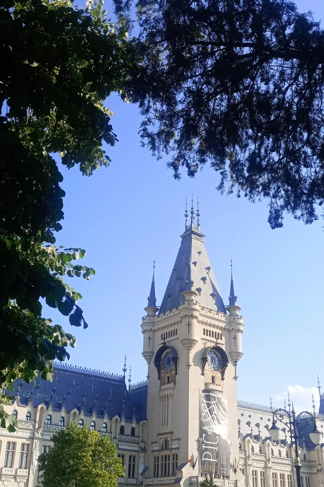
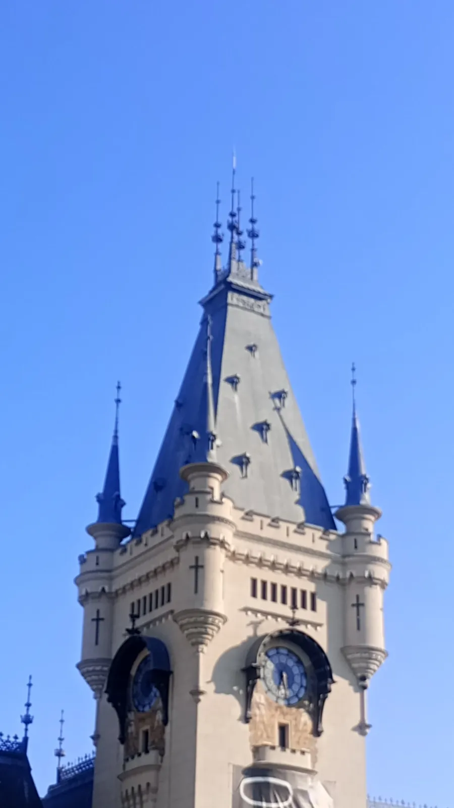
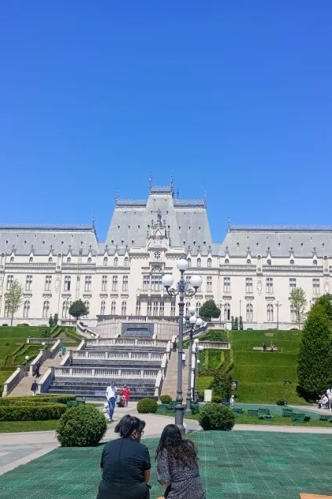
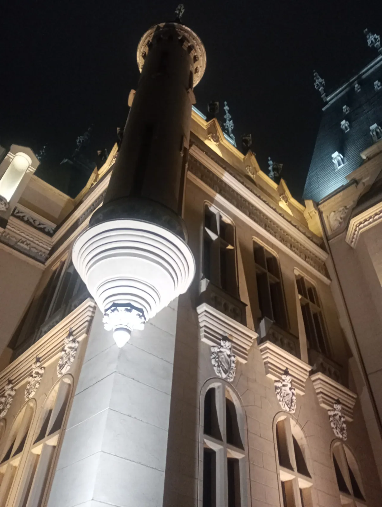
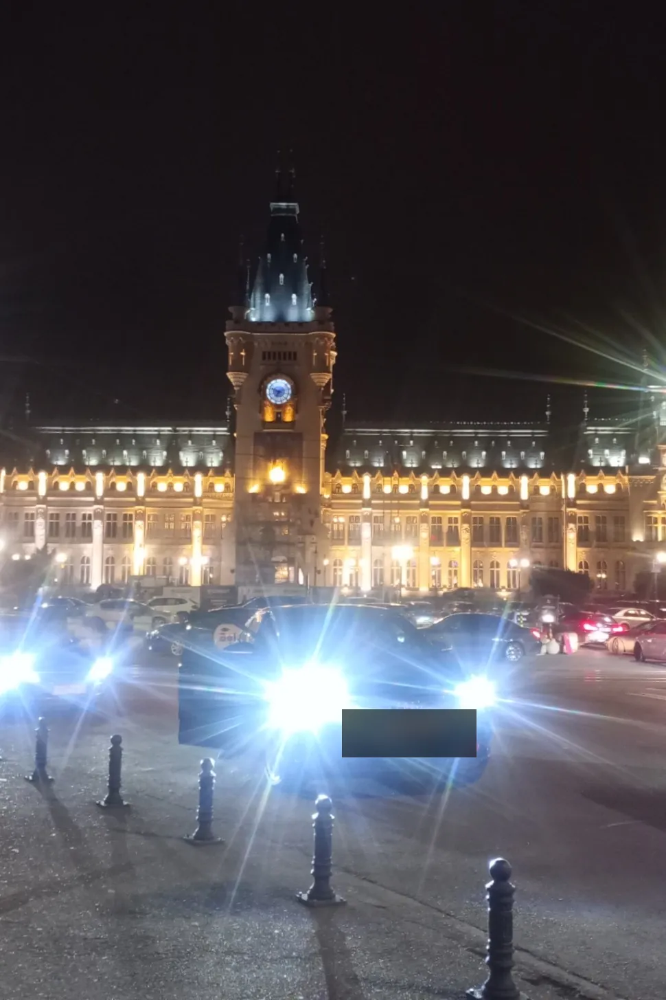

Dacă Iașul ar avea o singură carte de vizită, aceasta ar fi. Palatul Culturii se ridică la capătul bulevardului ca un castel de poveste — turnuri ascuțite, dantelă de piatră și un ceas care, la ceas fix, cântă „Hora Unirii". Mulți îl cred medieval; de fapt are puțin peste o sută de ani, dar stă pe un loc încărcat de istorie de secole.
If Iași had a single calling card, this would be it. The Palace of Culture rises at the end of the boulevard like a fairy-tale castle — pointed turrets, stone lacework and a clock that, on the hour, plays the "Hora Unirii". Many take it for medieval; in fact it is a little over a hundred years old, yet it stands on a spot steeped in centuries of history.
IstorieHistoryUn palat pe locul Curții Domnești
A palace on the site of the Princely Court
Aici, în inima Iașului, s-a aflat vreme de secole Curtea Domnească a Moldovei — o curte pomenită în documente încă din 1434. Palatul de azi a fost ridicat în parte peste ruinele acestor curți și pe temeliile unui palat neoclasic din vremea domnitorului Alexandru Moruzi (1806–1812). A fost gândit ca Palat Administrativ și de Justiție — rol pe care l-a păstrat până în 1955, când a fost transformat în muzeu. Clădirea, în stil neogotic, a fost ridicată după planurile arhitectului Ion D. Berindey (ajutat de Filip Xenopol și Grigore Cerchez) și inaugurată pe 11 octombrie 1925, în prezența regelui Ferdinand I și a reginei Maria.
Here, at the heart of Iași, stood for centuries the Princely Court of Moldavia — a court mentioned in documents as early as 1434. Today's palace was raised partly over the ruins of those courts and on the foundations of a neoclassical palace from the time of voivode Alexandru Moruzi (1806–1812). It was conceived as an Administrative and Justice Palace — a role it kept until 1955, when it became a museum. The neo-Gothic building was raised to the plans of architect Ion D. Berindey (assisted by Filip Xenopol and Grigore Cerchez) and inaugurated on 11 October 1925, in the presence of King Ferdinand I and Queen Marie.

Neogotic, până în cel mai mic detaliu
Neo-Gothic, down to the smallest detail
Palatul e o bijuterie a stilului neogotic. Se întinde pe o suprafață de 34.236 de metri pătrați și cuprinde 298 de camere, legate de holuri largi și scări monumentale. Piatra fațadei e împodobită cu ornamente heraldice, sculptate cu răbdare — un edificiu gândit să impresioneze de la prima privire.
The palace is a jewel of the neo-Gothic. It covers a surface of 34,236 square metres and holds 298 rooms, linked by broad halls and monumental staircases. The façade's stone is dressed with heraldic ornament, patiently carved — a building meant to impress at first sight.


La fiecare oră, turnul își spune povestea în note de „Hora Unirii" — un oraș care își cântă singur istoria.
On every hour, the tower tells its story in the notes of the "Hora Unirii" — a city that sings its own history.
Ceasul care cântă Hora Unirii
The clock that plays the Hora Unirii
Turnul central, înalt de 55 de metri, e semnul după care recunoști orașul de departe. În vârful lui, un carilon din opt clopote acordate intonează „Hora Unirii" — melodia compusă de Alexandru Fechtenmacher, pe versurile lui Vasile Alecsandri, care amintește de Unirea Principatelor din 1859. Melodia e „scrisă" pe un tambur de 35 cm, cu 69 de cuie. După ampla restaurare din 2016, poți urca și în camerele ceasului, pe trei niveluri ale turnului: Camera Greutăților, Camera Mecanismului și Camera Clopotelor.
The central tower, 55 metres tall, is how you recognise the city from afar. At its top, a carillon of eight tuned bells plays the "Hora Unirii" — the melody composed by Alexandru Fechtenmacher, to verses by Vasile Alecsandri, recalling the 1859 Union of the Principalities. The tune is "written" on a 35 cm drum with 69 pegs. Since the great 2016 restoration, you can also climb the clock chambers, on three levels of the tower: the Weights Chamber, the Mechanism Chamber and the Bells Chamber.

Patru muzee sub un singur acoperiș
Four museums under one roof
Astăzi, Palatul găzduiește Complexul Muzeal Național „Moldova", cu patru muzee: Muzeul de Istorie a Moldovei (1916), Muzeul Etnografic al Moldovei (1943), Muzeul de Artă (1860) și Muzeul Științei și Tehnicii „Ștefan Procopiu" (1955). Practic, într-o singură clădire poți trece de la costume și tradiții populare, la pictură, la mașinării vechi și instrumente științifice. E genul de loc în care poți sta o oră sau o zi întreagă — depinde numai de curiozitatea ta.
Today the palace houses the "Moldova" National Museum Complex, with four museums: the Museum of the History of Moldavia (1916), the Ethnographic Museum of Moldavia (1943), the Art Museum (1860) and the "Ștefan Procopiu" Museum of Science and Technology (1955). In a single building you move from folk costumes and traditions, to painting, to old machines and scientific instruments. It's the kind of place where you can spend an hour or a whole day — it depends only on your curiosity.
